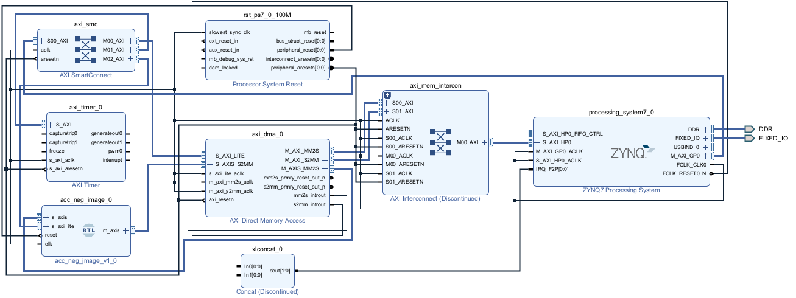
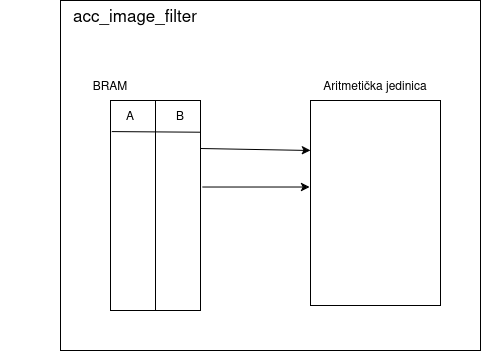
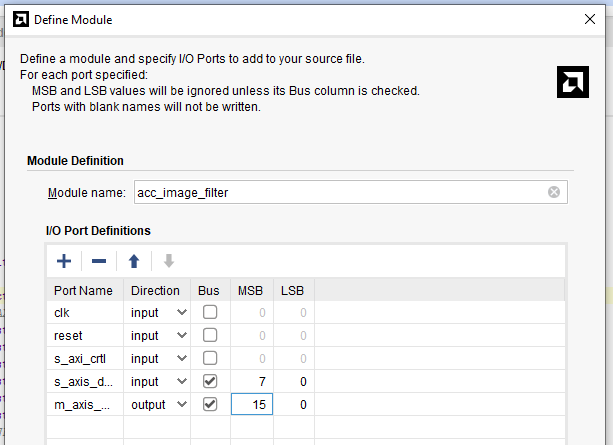
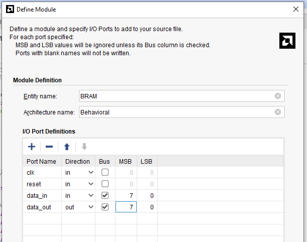

09. feb 2026.
Danas smo počeli izradu projekta. Konačno smo odradili LAB2 jer sko zaključili da nam je to pola posla. Dobar deo projekta
se svodi na LAB2.
Zajedno smo prosli svih 24 strane, doduše zbrzali smo deo sa primerima za filtere jer sko skontali da
je taj korak daleko od nas.
Imali smo problema sa ILA-om ponovo.
Dodavanjem nje u VHDL kood, preko mark-debug komandi, dobili smo debug_cores xsa fajl
ALI
Kad probamo da dodamo u Hardware manager, alat nam izbacuje grešku da nije uspeo da nadje debug cores.
U nastavku prilažem sliku na uvid kao dokaz. Verujem da je ILA jako bitan deo izrade VLSI sistema i voleo bih da naučimo da je koristimo
što pre.


U narednim danima počećemo sa izradom akceleratora, prvo osnovne potrebe a onda i bonuse.
10. feb 2026.
Danas smo se najviše pozabavili preliminarnom verzijom blok dizajna. Dodali smo Timer i ovako bi otprilike
trebalo da izgleda naš finalni projekat, samo umesto acc_neg_image treba da stoji acc_image filter.

Axi_timer smo ostavili skroz bez interrupta jer smo zaključili da nam nije potreban jer ne odlučuje Timer kada treba da
izračina vreme.
Potom zmo započeli izradu našeg akumulatora odnosno komponente acc_image_filter. Ovo je neka naša zamisao po tekstu zadatka.

U okviru njega, ralizovaćemo kao posebne komponente BRAM i aritmetičku jedinicu pa ćemo ih posle kao komponente dodati
u naš filter.


Ispod ću priložiti kodove za obe komponente. Bram je kompletiran, razlikuje se malo sa slike, odnosno razdvojili smo
data_out na data_out_1 i data_out_2.
Komponenta acc_image_filter za sad ostaje nekompletirana.
BRAM
acc_image_filter